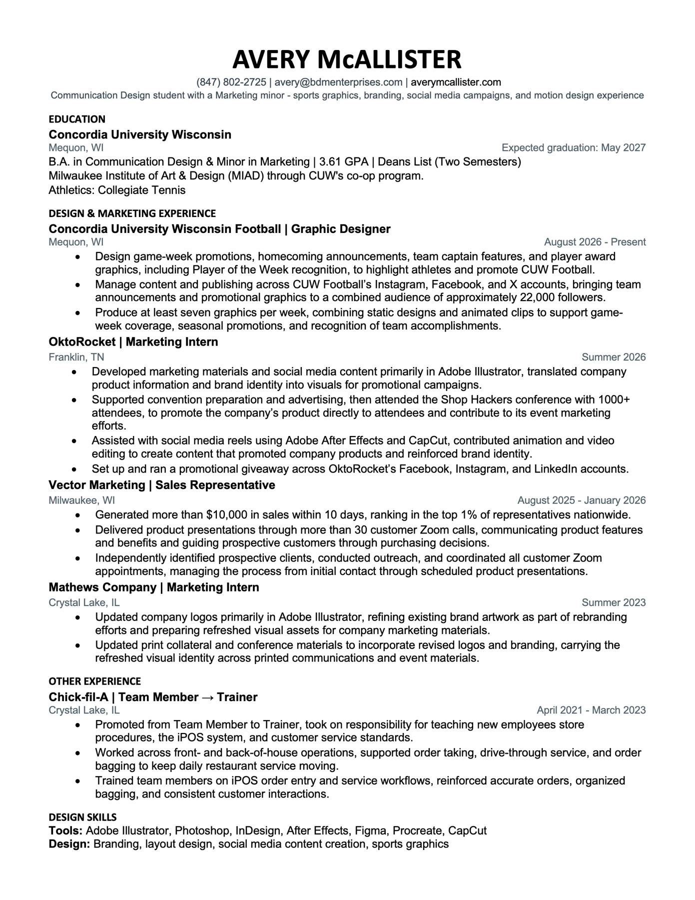

RESUME
Learn more about my professional experience here.
EXPERIENCE,
EDUCATION + SKILLS.
Explore my professional experience, education, and creative background. My resume highlights the experiences and skills that have shaped me as a graphic designer and marketer.
